风之纹章中总体来说比黄金城之谜练级要麻烦，特别是魔法师少了原来练级的利器防御术（每次20多经验才用5点魔，而且不会对练级有任何坏影响）。
第一章 英雄出发
第一步，右下拣药草。
第二步，到索尔上解毒。
第三步，右上（上2，左1）攻击一个狼人，在受到狼人攻击后升到2级。
第四步，向上一步同时吃一个药草，靠反击杀狼人。
第五步，左2上1攻击上面的野武士（66点血的）。
第六步，吃药草，靠反击杀死上面的蛇魔女。
第七步，攻击右面剩下的野武士（66点血的），得16点经验。
第八步，杀死野武士（66点血的）升到6级。
本关索尔优先攻击野武士（44点血的），应利用这一点。
本关过后
兰迪斯：6.19
第二章 恶魔之窟
1.让尤利安到第二台阶的右下（如图），让兰迪斯带着索尔在下面待命（最好让兰迪斯在箱子的下方4格，将来向上走的时候比较快）。
2.以后每回合，电脑攻击，尤利安补血。其中要找出个机会吃个魔法草。注意冰魔导士的魔法很厉害，尽量在每回合都有电脑攻击失败，保持血量在中等偏上较好。
3.尤利安达到9级左右时，让兰迪斯带着索尔到尤利安右边悬崖下，使个邺火，得点经验（尽量多点，我只得到40多点，也就是达到6.60好象也够了）。
4.尤利安带着剩下的术士到右侧（还是第二台阶上）箱子附近。尤利安先在术士右边攻击到术士没血，然后再走到术士下面即可保证术士不动，并且尤利安在术士下方。兰迪斯带着索尔拣箱子。
5.兰迪斯向上走到最后一批敌军的中间位置（按照最后兰迪斯是在左方箱子的话距离正好），索尔上去攻击杀一敌军。兰迪斯向上攻击，然后敌军攻击兰迪斯变成2重伤1满血。然后兰迪斯攻击左方敌军，索尔杀另一没血敌军，敌军攻击兰迪斯被反击至重伤。最后兰迪斯杀之达到7.70以上。
6.兰迪斯向左捡隐藏物品，然后向右走。
7.兰迪斯到悬崖下，这样索尔会跟到兰迪斯左边（注意使兰迪斯上方为悬崖索尔无法走到即可）。下一步兰迪斯到距离术士左4处，尤利安到术士左方。然后尤利安给索尔补血，索尔随便。最后尤利安到术士下方，索尔到术士左方攻击术士（保证术士满血），下一回合术士攻击索尔，索尔升到8级，防御达到52。至此可以利用兰迪斯和尤利安挡住术士慢慢练到255了。
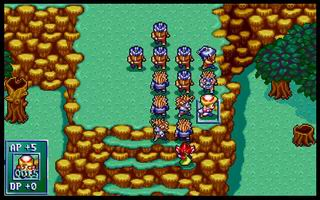
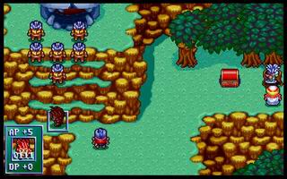
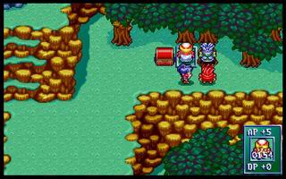
本关过后
兰迪斯 12.53 尤利安 15.81
第三章 石巨神之封印
本关有回合限制，没办法只好在22回合结束了。注意拿全宝物即可。
本关过后
兰迪斯 14.27 尤利安 18.20 亚克 10.71
第四章 谜之女
第一步：全员向右。
第二步：可形成如图的情况，把索尔挡在身后。
以后要注意的就是不要杀前面任何一个士兵，反击杀死除外（可以补位）。
第五回合后，会有援兵出现，不要管让索尔去解决吧（反正他们身上也没什么东西）。要是有冲上来的就用魔法杀了好了。
在援军被杀光后又形成开始时的情况，现在就等待魔导士的魔法耗光吧，这样它就会走到面前了。如果怕反击把电脑杀光可以把亚克的武器先转给其他人，等下回合再交回，亚克就没法反击了。
魔法师魔耗光后利用反击一个个把士兵反击死，这样就很容易形成围住电脑的局势了。最后亚克向下拣箱子，兰迪斯到亚克的位置,法莲娜向下一步,尤利安到法莲娜原来位置。士兵被反击死后，法莲娜和尤利安向前一步，慢慢升级吧。现在兰迪斯和亚克完全被解放了，前进到电脑后方就可以很有选择的拷打了。在拣完箱子后，亚克在拣完箱子后再和法莲娜换位，法莲娜主要拷打魔导士，把冰魔导士留给亚克。
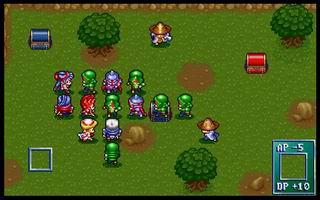
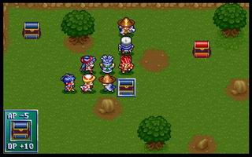
本关过后
兰迪斯 20.45 尤利安 22.38 亚克 18.22 法莲娜19.15
第五章 疾风之帝国军
终于意识到风之纹章和黄金城之谜练级的最大不同之处了，那就是缺少一个象盖亚这样的bt，每关想找一个防御能和电脑最强兵种攻击相当的人实在是很难。算了一下，兰迪斯需要22级，亚克需要21级，要想上一关达到实在是太难了(至少亚克是绝对不可能)。要想能把电脑的骑士开始就挡住，是绝对不可能的，看来只好在这关的开始来想办法了。
兰迪斯和亚克开始打弓兵就能升到21、19，够让士兵休息了（士兵攻击118）。骑士攻太高（攻击124），防御低（防51），血又少（血133），还是留士兵练级好了。
1.开始练级的步骤：
第一步：开始时全员聚在索尔的左下，亚克靠前一点；上面的3个骑兵和3个弓兵会向下攻击。（右上的部队只要没达到他们的攻击范围，他们是不会过来的。）
第二步：亚克向左上走一点，准备拣箱子。其他3人待命即可。
第三步：亚克拣箱子，其他人待命；骑士会攻击我方防最低的尤利安，可竟然不费血，汗。
第四步：兰迪斯靠上一点攻击一个弓兵，亚克下来攻击另一个弓兵。
第五步：找一下位置，应该能达到一个弓兵只会休息的平衡点。
然后尤利安和法莲娜向下走到弓兵的攻击范围外，互相脱掉衣服(汗)。这样骑士就会到下面攻击防御最低的法莲娜（法莲娜：你扎我啊！你扎我啊！――受虐狂），这样尤利安就可以在开始时得些经验。
2.在兰迪斯到21、亚克到19后，向右上走。法莲娜对电脑用奔雷弹，其他人排成十字，等电脑用冰暴，尤利安补血。
3.电脑魔法费完后，亚克从上面小路走过去，在走到一定程度后电脑就会全军进攻。这时亚克再退回来，和其他人一起布阵练级。这时法莲娜应该已经会恢复之光，所以几个人排成十字，让电脑冰暴后再让法莲娜补血。亚克这时只攻击2格外的人，等亚克能够一击必杀士兵后，再从上面的小路绕到电脑后面继续练级
ps:我找到了一个好位置，在这个位置上只要一个人就可以把电脑全部堵住（如图）。
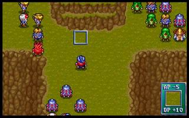
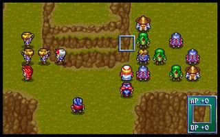
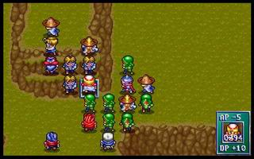
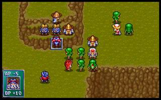
本关过后
兰迪斯 28.69 尤利安 30.43 亚克 26.22 法莲娜30.61
第六章 帝国之追击
本关防御彻底超过电脑攻击，电脑最高攻击才131，我方最低的防御都已经到141了。
1.开始没说的，先把第一批电脑兵干掉。
2.然后兰迪斯落在后面，不让索尔过去（索尔会跟着兰迪斯行动）。法莲娜走到一个能用奔雷弹打到大部分电脑的位置（如图）。以后每回合都是法莲娜奔雷弹，魔导士补血。
3.在魔导士没魔后，法莲娜打开一条路走到最后一批人处用奔雷弹，让电脑的魔导士补血。我的法莲娜这时30级正好300多魔，刚好够让魔导士把魔用光。
4.在魔导士用光魔后，亚克先走下来，脱掉衣服和武器，让电脑走过来攻击（这时只有亚克脱掉衣服后的防御低于131了，没有别的人选了，汗）。把电脑引出来后（主要目的是可以不杀开始时的骑士也可以走过去），再让亚克和兰迪斯交换。让兰迪斯自己在下面练级，亚克和尤利安练上面的一个士兵，法莲娜练上面的两个弓兵。
在兰迪斯不能再练后应该是在35级左右，兰迪斯和尤利安换位。尤利安杀骑士使援军出现。法莲娜和亚克提前过去布阵。这时能练级的只有兰迪斯用火烧了。
这关本来想让兰迪斯达到40级的，可惜还是功亏一篑了，该死的索尔跟的太紧了。尤利安不用升的太快，第一个黑暗徽章也要到第8章了（不然这关到40应该没什么问题）。
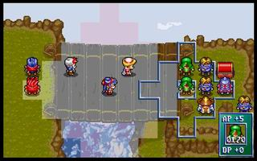
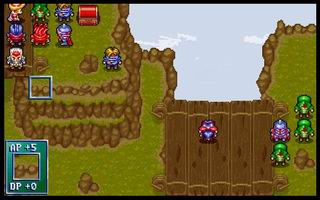
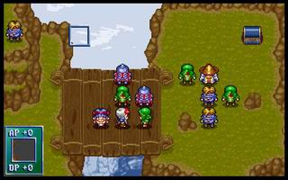
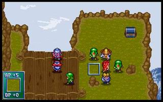
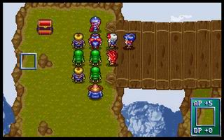
本关过后
兰迪斯 37.16 尤利安 34.86 亚克 28.34 法莲娜40.00
第七章 竞技场勇士
第一回合：4个人全部向右走（注意不要向上走，会影响裘娜的走位）。
第二回合：亚克靠住柱子，法莲娜和尤利安分别在亚克的上方和右方（此时法莲娜和尤利安防御都应大于165了），兰迪斯继续向右走。
第三回合：兰迪斯向上，其他人不动。这样裘娜就会向右走，兰迪斯就可以与裘娜单挑了（说是单挑，可兰迪斯的防御都要比裘娜高很多）。
在兰迪斯到40后，从原路返回，裘娜会跟着过来。这样很容易就给法莲娜周围围上3个人，练级容易多了。本关主要任务就是兰迪斯和亚克升到40，法莲娜尽量高就好了。
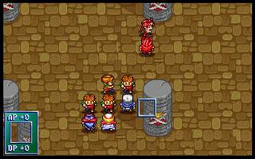
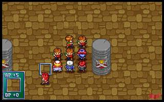
本关过后
兰迪斯 40.00 尤利安 36.71 亚克 40.00 法莲娜13.71 裘娜 15.00
第八章 地底监狱
开始时亚克从下面走，其他人向右走（在开始时要迅速把开始两批兵杀光）。然后亚克迅速向下走抢箱子。正中间的锯齿剑亚克先不要拿，拿了就没时间到上面和其他人汇合了，但符咒皮甲一定要拿到。
当费塔加救出村民后，电脑援军就会在右下出现。这时尽量堵住村民的路（让他们少走一步是一步），等电脑援军走上来后，让兰迪斯、法莲娜等防御高的人挡在前面（记得把符咒皮甲给兰迪斯），只要和电脑之间没有空隙，村民就只能休息了。这时要先把电脑的弓箭手杀光不然对村民是很大威胁，而且到处乱跑的弓箭手对后期布阵威胁也很大。然后就是休息等费塔加把魔耗光，这样费塔加也就只有休息了（此时第一批援军应该基本被费塔加杀光了）。
这时电脑的第三批（ap460）援军应该已经出现了。大部分的援军是从上面绕过来的，只有2、3个从下面来。下面的没办法用圣光柱杀掉吧。上面的第三批援军这时应该已经被第二批援军(ap249)挡住了。这时就可以拿第二批援军练级了。兰迪斯、法莲娜可以普通攻击练第二批援军，用魔法攻击来练第三批援军；尤利安用魔法就可以升到40了（封魔咒术一次就是30多的经验啊），不用练级；亚克从一开始就可以对第二批援军一击必杀，没法练；裘娜可以利用第一批援军剩下的法师练级（法师ap122，裘娜dp125）。
最后兰迪斯和法莲娜用把第三批援军全杀光就可以了（这时留下的法师起了很大作用，堵住路不让村民过去），记得让亚克去拿下面的锯齿剑。
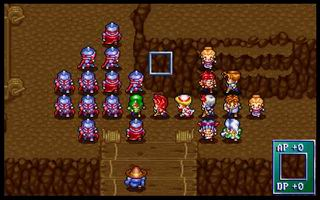
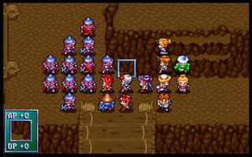
本关过后
兰迪斯 10.05 尤利安 40.00 亚克 2.09 法莲娜 22.23 裘娜 20.14 费塔加 15.00
第九关 布兰多和盖亚
开始时布兰多和盖亚先把右边的几个兵杀光，可惜了那冰魔导士还是满魔就要被杀掉，可惜啊。
另外一边先把左边的两个魔法师的魔耗光，然后大家从冰魔导士身边挤过去（应该还能剩下一个暗黑骑兵）。把中间那批兵除魔导士外全杀掉。在魔导士面前布置上多几个人，魔导士就会使魔法轰击。这时让布兰多和盖亚从魔导士身边绕过来，同一时间电脑援军应该出现了（第15回合），派几个防御高的人挡在前面，这样就可以开始练级了。
这时我的练级方法是不让费塔加级别太高，然后脱了衣服让弓箭手射。法莲娜和尤利安争取一下也别打全靠魔法升级。在法莲娜和尤利安魔法用完后再让费塔加升级。同样兰迪斯也完全靠魔法升级（一开始兰迪斯对电脑就是一击必杀，郁闷）。
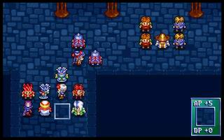
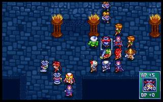
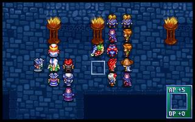
本关过后
兰迪斯 13.07 尤利安 7.94 亚克 3.25 法莲娜 29.79 裘娜 32.29 费塔加 30.25 布兰多 36.72 盖亚 28.72
第十关 宗教法庭
开始全体向右走(顺便拣宝物)，在右边门附近布阵，主要目的是为了让对方的法师能最有效的攻击我方队员。在右边门出来的法师魔法用完后，第二层门出来的法师也就开始到了附近。保证使奔雷弹的法师每次都是攻击我方全体，这时所有的补血工作都留给尤利安来完成（终于能升级了）。
布兰多和费塔加随便找个好位置普通攻击升级就好了；亚克、裘娜、盖亚都对开始出现的骑士能一击必杀，但又不可能达到450的防，还不会使用魔法，只好放弃在这关升级的希望；在4个法师魔法都耗完后，法莲娜开始用奔雷弹升级（每次都能攻击到10多个人，升到40很容易）；兰迪斯先使用狂暴巨焰升几级，这样防御就超过450可以挡住后来出来的那几个骑士了。不过也只有法莲娜和兰迪斯的防御能超过那几个骑士的（谁还能练出更多的？）。
然后转换为以下阵型继续练兰迪斯和亚克，主要是利用墙和低等级的电脑来挡住那几个骑士，还有就是那几个骑士竟然只能打一格(汗，这也叫骑士)。这时主力练兰迪斯在兰迪斯到21级后就可以挡住攻击最高的武士了。然后可以把武士也引到身边，慢慢升级吧。这时主要练亚克，一定要让亚克升到15级，这样就会治愈之泉了。
在感觉时间差不多后(我是在230回合左右)剩下一个骑士，其他杀掉。所有人在台阶处布阵，让魔法师轰吧，这下可以让用治愈之泉升级了。在杀掉最后一个骑士后，最下面又出现了援军，全军全力向下吧。我是刚好在255回合结束。
本关兰迪斯和亚克升级很猛，但从下一关开始就只能靠魔法升级了；法莲娜直接升到双40了，魔法师就是快；最可怜的就是象裘娜、盖亚这样的纯攻击人物了，攻击又高，防御又低，还不能远程攻击，太难练了；可怜的布兰多这关就已经到40了，可竟然到14章才能升级。
本关过后
兰迪斯 29.34 尤利安 19.59 亚克 18.92 法莲娜 40.00 裘娜 33.49 费塔加 40.00 布兰多 40.00 盖亚 29.38
十一关 琴琴参见
开始全员向左走，利用电脑魔法师在攻击范围内有敌军就会攻击的特性，让大多数魔法师攻击几个血多的人，只有一个攻击全体人员。这时亚克开始补血练级吧，只恨魔法师的魔法太少，不能满足亚克补血的需要。同时裘娜(别人也行) 向上去拣圣光之矛和光明徽章，不要让电脑抢了。
在裘娜拣完宝物后，电脑应该已经从四面把我方的人包围了。这时把左边的电脑杀光，留2个魔法师给琴琴练级，练完魔法师就练弓箭手，在能一击必杀弓箭手后，琴琴的防御就应该大于168了，这时琴琴就可以随便练级了。费塔加在人群中间可以每回合都能攻击到人，应该是目前练级的主力。兰迪斯用魔法升级（想用攻击也不可能，100%一击必杀）。裘娜、盖亚在下方用308血的野武士练级（其他的都可以一击必杀了），在他们不能练后，让琴琴下来继续练。
在最后（我是在200回合左右）让其他人休息，费塔加利用裂地术升级（前面一定不能杀太多电脑，电脑留的越多，现在能得的经验就越多），尤利安用神之祝福升级，没比这时更好的机会了。
ps:本关第一次出现了树，可以降攻击(其他地形都是攻击+5的)，要好好利用。
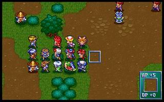
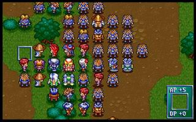
本关过后
兰迪斯 33.31 尤利安 30.89 亚克 23.55 法莲娜 40.00 裘娜 36.06 费塔加 23.06 布兰多 40.00 盖亚 35.63 琴琴 34.39
十二关 火神的宫殿（众神的兵器）
本关只有一个电脑，可怜。开始把电脑包围然后电脑就只能休息了。雷德的ap为240，生命2000，魔法1400，可以使31个裂地术。让亚克补血升级吧，在亚克没魔后让费塔加继续补血。然后就是拷打了，没什么好说的。本关过后，琴琴转武神，裘娜转狂战士。
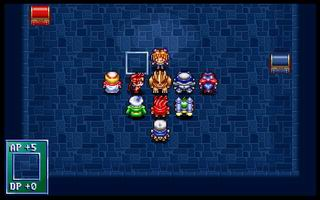
本关过后
兰迪斯 33.31 尤利安 40.00 亚克 35.51 法莲娜 40.00 裘娜 40.00 费塔加 27.34 布兰多 40.00 盖亚 42.70 琴琴 40.00
十三关 地狱三斗神
本关是肉搏型人员练级的大关。地狱三斗神真是好啊，血多经验多，要好好利用（这关裘娜、琴琴都能练到双40，盖亚也能练很高）。
开始全体向上，不管电脑魔法直接冲到上面中间位置。琴琴直接冲到地狱三斗神身边，使用灵弹超必杀和普通攻击练级；其他人留在中间让电脑使用魔法攻击，亚克补血升级。
电脑没魔法后，让布兰多脱下衣服引电脑过来，让费塔加裂地术范围内多几个电脑。费塔加使用裂地术升级；同时兰迪斯到下面，用狂暴烈焰烧电脑升级；裘娜也走到地狱三斗神身边攻击升级（三斗神真是练级的好目标，每次攻击都有40左右的经验）。
在101回合电脑会动，要注意布置。
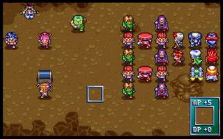
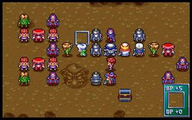
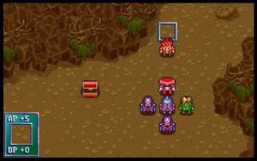
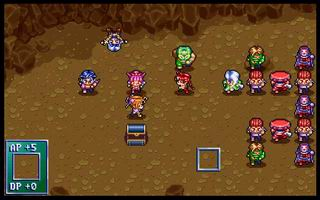
本关过后
兰迪斯 37.90 尤利安 40.00 亚克 39.86 法莲娜 40.00 裘娜 39.91 费塔加 38.62 布兰多 40.00 盖亚 75.54 琴琴 40.00
第１４章：天空之骑士
本关无他，开始时在下面布好阵。等电脑用魔法轰的时候补血把亚克、费塔加练满。兰迪斯用狂暴烈焰练到40，然后就可以让盖亚把所有人都杀了（本关实在没任何一个能挨盖亚一下）。
注意电脑在第6回合有援军，会有一个兽人在上面抢暗之徽章，注意不要被它抢走。
本关要卖裂地术了，其实在之前也可以卖，只要能达到自己满意的价格就可以了，目前能达到的最大价格为49151，还有更高的吗？
由于裂地术的价格会变化，这里给出能变化裂地术价格的方法。如果裂地术价格不满意，那就先把当前进度保存（不是战场记录），然后拷贝到另一个目录。拷贝10关以后的进度（当然你要觉得你能力超强，可以从10关开始练我也没意见），迅速过关，每次休息时，到商店看一下裂地术价格。如果价格合适，就切出游戏把原来保存的进度拷回，然后在酒吧load回原来的进度，这时裂地术的价格还是刚才的价格不会变（记得不要关闭游戏，要切出游戏来操作才能保证裂地术价格不变）。呵呵，顺利完成。
我这关的裂地术卖的价格为49151，总共买的力量药水为44个。
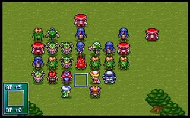
本关过后
兰迪斯 40.00 尤利安 40.00 亚克 40.00 法莲娜 40.00 裘娜 39.91 费塔加 40.00 布兰多 40.00 盖亚 78.12 琴琴 40.00
第１５章：要塞炮的危机
开始全员向上，玛丽安不动，这样就能引一个电脑的弓箭手出来。然后就靠费塔加的神行术和尤利安的神之祝福反复运用来练级。
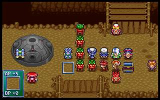
本关过后
兰迪斯 40.00 尤利安 40.00 亚克 40.00 法莲娜 40.00 裘娜 40.00 费塔加 40.00 布兰多 9.03 盖亚 80.12 琴琴 40.00 玛丽安 26.12
第１６章：罗特帝亚之突入
本关只有5个人，也就是只有布兰多能练级了。没什么好说的，注意利用树桩和拿到金属矿就可以了。
本关过后
兰迪斯 40.00 尤利安 40.00 亚克 40.00 费塔加 40.00 布兰多 21.77
第１７章：人质的危机
本关同样没什么好说的，把玛丽安练到40，然后盖亚杀掉所有人就可以了。
本关过后
法莲娜 40.00 裘娜 40.00 盖亚 82.34 琴琴 40.00 玛丽安 40.00
第十八章：咆哮之狮王
电脑的防御实在太低，只好全部留给盖亚了。
本关过后
兰迪斯 40.00 尤利安 40.00 亚克 40.00 法莲娜 40.00 裘娜 40.00 费塔加 40.00 布兰多 22.01 盖亚 86.92 琴琴 40.00 玛丽安 40.00
第十九章：蛇口之道
由于要得妖刀村正，所以只有快速过关了（20回合）。
本关过后
兰迪斯 40.00 尤利安 40.00 亚克 40.00 法莲娜 40.00 裘娜 40.00 费塔加 40.00 布兰多 24.01 盖亚 90.28 琴琴 40.00 玛丽安 5.12 兰斯洛特 6.65
第二十章：迷走之隧道
练级，全部人都让盖亚杀掉。
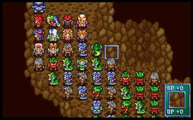
本关过后
兰迪斯 40.00 尤利安 40.00 亚克 40.00 法莲娜 40.00 裘娜 40.00 费塔加 40.00 布兰多 28.06 盖亚 95.19 琴琴 40.00 玛丽安 24.05 兰斯洛特 28.08
第二十一章：地底神殿
练级麻烦的最后一关，以狂战士和黑暗祭司为主练级，至此全部人员成为40级(珊除外)，和封剑尘的关数一样。只是我用了246回合，估计这关封剑尘用的回合数要少的多。
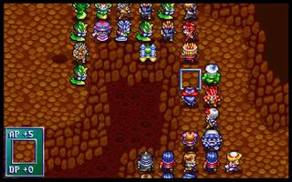
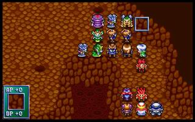
本关过后
兰迪斯 40.00 尤利安 40.00 亚克 40.00 法莲娜 40.00 裘娜 40.00 费塔加 40.00 布兰多 40.00 盖亚 99.00 琴琴 40.00 玛丽安 40.00 兰斯洛特 40.00
第二十二章 巫汤婆婆
至少要等到第三批电脑援军出现，有地狱铠甲。
还有就是注意要让法莲娜杀掉巫汤婆婆。
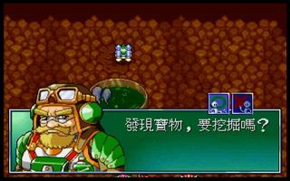
本关过后
尤利安 40.00 亚克 40.00 法莲娜 40.00 裘娜 40.00 费塔加 40.00 布兰多 40.00
盖亚 99.00 琴琴 40.00 玛丽安 40.00 兰斯洛特 40.00
第二十三章 死神冥河
注意要让法莲娜杀掉死神，其他没什么了。
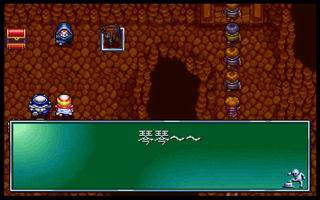
本关过后
兰迪斯 40.00 尤利安 40.00 亚克 40.00 裘娜 40.00 费塔加 40.00 布兰多 40.00
盖亚 99.00 琴琴 40.00 玛丽安 40.00 兰斯洛特 40.00
第二十四章 魔精石之秘密
本关要注意应用费塔加的神行术和珊的反击，20回合就能完成任务。
ps:本关25回合内完成任务大刀老汉即会出现，我们都被功略骗了。
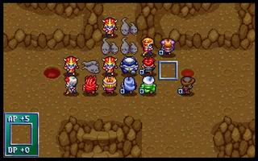
本关过后
兰迪斯 40.00 尤利安 40.00 亚克 40.00 法莲娜 40.00 裘娜 40.00 费塔加 40.00 布兰多 40.00 盖亚 99.00 琴琴 40.00 玛丽安 40.00 兰斯洛特 40.00 珊 40.00
至此所有人物达到全满，不再写了
第二十五章 魔战将军
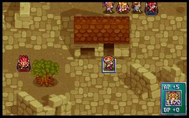
7回合结束。没有传送术，抢东西果然慢多了。
第二十六--二十九章略
第三十章 最终之圣战
最后的boss果然厉害，我所有人一起攻击竟然也要2回合才行，想一回合灭掉是没可能了。
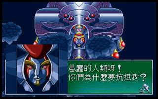 |